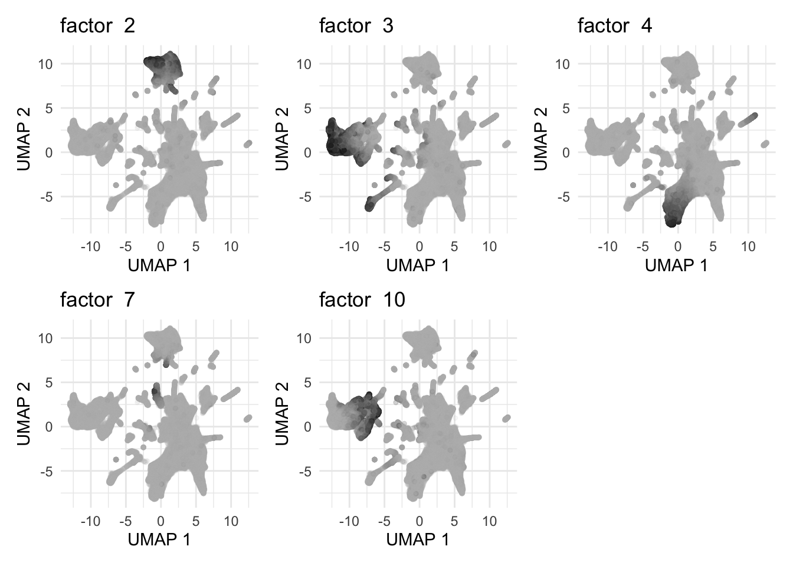
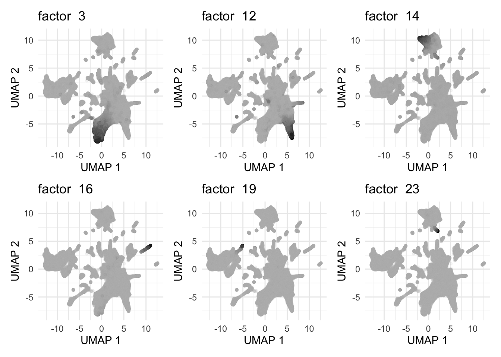

Analysis of Single-cell (Spatial) Transcriptomics From Mouse Embryos
Ziang Zhang
2024-11-15
Last updated: 2025-01-23
Checks: 7 0
Knit directory:
single-cell-jamboree/analysis/
This reproducible R Markdown analysis was created with workflowr (version 1.7.1). The Checks tab describes the reproducibility checks that were applied when the results were created. The Past versions tab lists the development history.
Great! Since the R Markdown file has been committed to the Git repository, you know the exact version of the code that produced these results.
Great job! The global environment was empty. Objects defined in the global environment can affect the analysis in your R Markdown file in unknown ways. For reproduciblity it’s best to always run the code in an empty environment.
The command set.seed(1) was run prior to running the
code in the R Markdown file. Setting a seed ensures that any results
that rely on randomness, e.g. subsampling or permutations, are
reproducible.
Great job! Recording the operating system, R version, and package versions is critical for reproducibility.
Nice! There were no cached chunks for this analysis, so you can be confident that you successfully produced the results during this run.
Great job! Using relative paths to the files within your workflowr project makes it easier to run your code on other machines.
Great! You are using Git for version control. Tracking code development and connecting the code version to the results is critical for reproducibility.
The results in this page were generated with repository version 7981776. See the Past versions tab to see a history of the changes made to the R Markdown and HTML files.
Note that you need to be careful to ensure that all relevant files for
the analysis have been committed to Git prior to generating the results
(you can use wflow_publish or
wflow_git_commit). workflowr only checks the R Markdown
file, but you know if there are other scripts or data files that it
depends on. Below is the status of the Git repository when the results
were generated:
Ignored files:
Ignored: .Rhistory
Ignored: .Rproj.user/
Untracked files:
Untracked: .DS_Store
Untracked: analysis/.DS_Store
Untracked: code/plot_loadings_on_locations.R
Untracked: data/.DS_Store
Untracked: data/mouse_embryo/
Untracked: output/.DS_Store
Untracked: output/mouse_embryo/
Note that any generated files, e.g. HTML, png, CSS, etc., are not included in this status report because it is ok for generated content to have uncommitted changes.
These are the previous versions of the repository in which changes were
made to the R Markdown (analysis/mouse_embryo.Rmd) and HTML
(docs/mouse_embryo.html) files. If you’ve configured a
remote Git repository (see ?wflow_git_remote), click on the
hyperlinks in the table below to view the files as they were in that
past version.
| File | Version | Author | Date | Message |
|---|---|---|---|---|
| Rmd | 7981776 | Ziang Zhang | 2025-01-23 | workflowr::wflow_publish("analysis/mouse_embryo.Rmd") |
| html | 91de9dc | Ziang Zhang | 2025-01-22 | Build site. |
| Rmd | 4f94bdf | Ziang Zhang | 2025-01-22 | workflowr::wflow_publish("analysis/mouse_embryo.Rmd") |
| html | 9e347dd | Ziang Zhang | 2025-01-22 | Build site. |
| Rmd | 82e82de | Ziang Zhang | 2025-01-22 | workflowr::wflow_publish("analysis/mouse_embryo.Rmd") |
| html | 06856f3 | Ziang Zhang | 2024-12-03 | Build site. |
| Rmd | 5f0f81b | Ziang Zhang | 2024-12-03 | workflowr::wflow_publish("analysis/mouse_embryo.Rmd") |
| html | 62d5728 | Ziang Zhang | 2024-11-27 | Build site. |
| Rmd | 749a0c4 | Ziang Zhang | 2024-11-27 | workflowr::wflow_publish("analysis/mouse_embryo.Rmd") |
| html | 5c65d9b | Ziang Zhang | 2024-11-27 | Build site. |
| Rmd | 61587ca | Ziang Zhang | 2024-11-27 | workflowr::wflow_publish("analysis/mouse_embryo.Rmd") |
| html | 3f6c470 | Ziang Zhang | 2024-11-18 | Build site. |
| Rmd | 47d0693 | Ziang Zhang | 2024-11-18 | workflowr::wflow_publish("analysis/mouse_embryo.Rmd") |
| html | 99a79f6 | Ziang Zhang | 2024-11-18 | Build site. |
| Rmd | a70fb60 | Ziang Zhang | 2024-11-18 | workflowr::wflow_publish("analysis/mouse_embryo.Rmd") |
| html | 070d27c | Ziang Zhang | 2024-11-15 | Build site. |
| Rmd | 074ea5c | Ziang Zhang | 2024-11-15 | workflowr::wflow_publish("analysis/mouse_embryo.Rmd") |
| html | 4a09688 | Ziang Zhang | 2024-11-15 | Build site. |
| Rmd | 90cbbb9 | Ziang Zhang | 2024-11-15 | workflowr::wflow_publish("analysis/mouse_embryo.Rmd") |
Data
This single cell RNA data is available here, as studied in Srivatsan et al, 2021.
The dataset considers \(108725\) cells and \(39198\) genes (after QC), measured with spatial locations in the mouse embryo.
library(Seurat)
library(Matrix)
library(data.table)
library(flashier)
library(ggplot2)
library(patchwork)
library(cowplot)
library(RColorBrewer)
library(Biobase)
library(ggpubr)
library(gridExtra)
library(fastTopics)
library(tidyverse)
source('../code/plot_loadings_on_umap.R')
source("../code/Customized_Plots.R")
source("../code/plot_loadings_on_locations.R")
seurat_object <- readRDS("../data/mouse_embryo/processed_seurat/seurat_object.rds")The data contains the UMAP information that we can directly use for visualization, and compare with the “anatomical annotation” and the “cluster label” in Srivatsan et al, 2021.
umap_original_embeddings <- cbind(seurat_object$umap1, seurat_object$umap2)
p1 <- DimPlotSagnik(umap_original_embeddings, group.by = seurat_object$anatomical_annotation, pt.size = 1) +
theme(plot.title = element_text(hjust = 0.5)) +
ggtitle("UMAP by Anatomical Annotation")
p2 <- DimPlotSagnik(umap_original_embeddings, group.by = seurat_object$final_cluster_label, pt.size = 1) +
theme(plot.title = element_text(hjust = 0.5)) +
ggtitle("UMAP by Cluster Label")
# Combine plots side-by-side
combined_plot <- p1 + p2 + plot_layout(ncol = 2)
combined_plot
| Version | Author | Date |
|---|---|---|
| 4a09688 | Ziang Zhang | 2024-11-15 |
Trying EBMF
Let’s try to implement the EBMF algorithm with the
flashier package, with different constraints and prior
distributions.
cols_to_keep <- colSums(Y != 0, na.rm = TRUE) > 0
Y <- Y[, cols_to_keep]
n <- nrow(Y)
x <- rpois(1e7, 1/n)
s1 <- sd(log(x + 1))
a <- 1
size_factors <- rowSums(Y)
size_factors <- size_factors / mean(size_factors)
# shifted_log_counts <- log1p(Y / (a * size_factors))
shifted_log_counts <- MatrixExtra::mapSparse(Y/(a*size_factors),log1p)Non-Negative EBMF
For the first EBMF problem, we consider non-negative EBMF with
point_exponential priors:
flashier_fit_nn <- flash(shifted_log_counts,
ebnm_fn = ebnm_point_exponential,
var_type = 2,
greedy_Kmax = 25,
S = s1,
backfit = T)
plot(flashier_fit_nn,
plot_type = "structure",
pm_which = "loadings",
pm_groups = seurat_object$final_cluster_label,
bins = 20, gap = 70)
Semi Non-Negative EBMF
ebnm_fn_list <- list()
ebnm_fn_list[[1]] <- flash_ebnm(
prior_family = "point_exponential"
)
ebnm_fn_list[[2]] <- flash_ebnm(
prior_family = "point_normal",
mode = "estimate"
)
flashier_fit_semi <- flash(shifted_log_counts,
ebnm_fn = ebnm_fn_list,
var_type = 2,
greedy_Kmax = 25,
S = s1,
backfit = T)
plot(flashier_fit_semi,
plot_type = "structure",
pm_which = "loadings",
pm_groups = seurat_object$final_cluster_label,
bins = 20, gap = 70)
GB Semi Non-Negative EBMF
ebnm_fn_list <- list()
ebnm_fn_list[[1]] <- flash_ebnm(
prior_family = "generalized_binary"
)
ebnm_fn_list[[2]] <- flash_ebnm(
prior_family = "point_laplace",
mode = "estimate"
)
flashier_fit_gbcd <- flash(shifted_log_counts,
ebnm_fn = ebnm_fn_list,
var_type = 2,
greedy_Kmax = 25,
S = s1,
backfit = T)
plot(flashier_fit_gbcd,
plot_type = "structure",
pm_which = "loadings",
pm_groups = seurat_object$final_cluster_label,
bins = 20, gap = 70)
GBCD
res.gbcd <- fit_gbcd(Y = Y, Kmax = 25, maxiter1 = 100,
maxiter2 = 50, maxiter3 = 50,
prior = flash_ebnm(prior_family = "generalized_binary",
scale = 0.04))
saveRDS(res.gbcd, "../output/mouse_embryo/res.gbcd.rds")Trying Topic Models
Then, let’s try fitting a topic model to this dataset using
FastTopics.
fasttopics_fit <- fit_topic_model(Y, k = 25)
| Version | Author | Date |
|---|---|---|
| 99a79f6 | Ziang Zhang | 2024-11-18 |
Summarize Structures from Loadings
There are some interesting structures of the loading based on the result of EBMF and FastTopics, that add new insights to the original UMAP visualization.
Non-negative EBMF
First, based on the non-negative EBMF result, there are some factors that are unique to certain cell types. For example:
The factor \(k9\) (mostly) is unique to Endothelial Cells.
The factor \(k13\) is unique to Choroid Plexus.
The factor \(k15\) is unique to White Blood Cells.
Shared factors include:
The factor \(k2\) is shared across Erythroid Progenitors and Hepatocytes.
The factors \(k3\) and \(k10\) are shared across multiple types of neurons and glial cells.
The factor \(k4\) is shared across Cardiac Muscle lineages and Myocytes.
The factor \(k7\) is shared across Erythroid Progenitors and White Blood Cells.

Semi-negative EBMF
The loadings from the semi-negative EBMF are more diverse, where each cell is composed of a larger number of factors. However, there are still both “unique” and “shared” factors across different cell types. For examples:
Specific factors include \(k3\), \(k12\), \(k14\), \(k16\), \(k19\), \(k23\):
Factor \(k3\) is (mostly) unique to Myocytes.
Factor \(k12\) is (mostly) unique to Chondrocytes (also appears in Connective Tissue Progenitors).
Factor \(k14\) is unique to Hepatocytes.
Factor \(k16\) is unique to Cardiac Muscle lineages.
Factor \(k19\) is unique to Choroid Plexus.
Factor \(k23\) is unique to White Blood Cells.

Shared factors include \(k2\), \(k4\), \(k9\), \(k11\):
Factor \(k2\) is shared across Erythroid Progenitors and Hepatocytes.
Factor \(k4\) (as well as \(k11\)) is shared across multiple types of neurons and glial cells.
Factor \(k9\) is shared across some clusters of the white blood cells and Erythroid cells.
| Version | Author | Date |
|---|---|---|
| 5c65d9b | Ziang Zhang | 2024-11-27 |
FastTopics
The result from FastTopics looks quite similar to the semi-negative EBMF, where each cell is composed of a larger number of factors.
For examples, some shared factors include:
Factor \(k3\) is shared between Erythroid Lineage and Hepatocytes.
Factor \(k7\) is shared between Peripheral Neuron and Schwann Cells.
Factors \(k10\) is shared between Developing Guts and Epithelial Cells.
Factor \(k13\) is shared between Erythroid Progenitors, Hepatocytes and White blood cells.
Factor \(k15\) is shared between Chondrocytes and Connective Tissue Progenitors.
Factor \(k16\) is shared between Glial cells and Peripheral Neuron.
| Version | Author | Date |
|---|---|---|
| 5c65d9b | Ziang Zhang | 2024-11-27 |
For unique factors, we can see:
Factor \(k4\) is (mostly) unique to Myocytes.
Factor \(k5\) is (mostly) unique to Neuron.
Factor \(k8\) is unique to White Blood Cells.
Factor \(k9\) is unique to Endothelial Cells.
Factor \(k14\) is unique to Neuron.
Factor \(k18\) is unique to Cardiac Muscle lineages.
| Version | Author | Date |
|---|---|---|
| 5c65d9b | Ziang Zhang | 2024-11-27 |
Compare these methods
The non-negative EBMF provides a kind of “cleaner composition” of each cell, where each cell is mostly composed of one base line factor and another factor that is ” kind of specific” to the cell type. This in a way demonstrates the advantage of the part-based representation (plus sparsity).
The semi non-negative EBMF provides a more “diverse” composition of each cell, where each cell is composed of a base line factor and multiple other factors that may appear in different cell types. The compensate of the “diversity” is the computation of this problem tends to be a bit more stable than the non-negative EBMF.
The FastTopics also provides a kind of diverse composition of each cell, where each cell is composed of multiple factors. This might be due to there is no sparsity constraint in the FastTopics model.
Overall, they all found some quite interesting structures (shared or unique) that are not obvious from the original UMAP visualization.
At the same time, non-negative EBMF also has smaller number of “interpretable” factors compared to the semi-negative EBMF and FastTopics. For example, if we count the number of factors that appear (with loading value greater than say 1e-10) at least in \(10\) cells, we have:
nn_factors <- colSums(abs(flashier_fit_nn$L_pm) > 1e-10) > 10
table(nn_factors)nn_factors
FALSE TRUE
6 19 semi_factors <- colSums(abs(flashier_fit_semi$L_pm) > 1e-10) > 10
table(semi_factors)semi_factors
TRUE
25 ft_factors <- colSums(abs(fasttopics_fit$L) > 1e-10) > 10
table(ft_factors)ft_factors
TRUE
25 This is a good thing if we want factors and loadings with very clear interpretation. However, it might also lead to a loss of information for some more subtle structures in the data.
More detailed exploration of NN-EBMF
gene_ids <- rownames(flashier_fit_nn$F_pm)
res <- ldf(flashier_fit_nn, type = "i")
F <- with(res, F %*% diag(D))
# let's make the gene names more readable
# gene_ids <- gsub("\\..*", "", gene_ids)
rownames(flashier_fit_nn$F_pm) <- gene_idsFor now, let’s focus on the result from the non-negative EBMF. First, let’s take a look at the structure plot of each factor from nn-EBMF. To make the visualization more clear, we only show the top 4 genes that contribute the most to each factor.
factor_of_interest <- c(2, 3, 9, 13, 15)
top_genes_mat <- apply(F, 2, order, decreasing = TRUE)[1:4, factor_of_interest]
top_genes <- unique(rownames(flashier_fit_nn$F_pm)[top_genes_mat])
plot(flashier_fit_nn,
plot_type = "heatmap",
pm_which = "factors",
pm_subset = top_genes,
pm_groups = factor(top_genes, levels = rev(top_genes)),
kset = factor_of_interest,
gap = 0.2)
| Version | Author | Date |
|---|---|---|
| 62d5728 | Ziang Zhang | 2024-11-27 |
For the factor k2 that is shared across Erythroid
Progenitors and Hepatocytes, the leading gene is ENSMUSG00000052305,
which corresponds to the Hbb-bs gene in Mus musculus (mouse), encoding
the hemoglobin, beta adult s chain. This gene is a part of the
beta-globin cluster and plays a crucial role in oxygen transport from
the lungs to peripheral tissues. It is predominantly expressed in
tissues involved in hematopoiesis. It is reasonable that this gene is
highly expressed in Erythroid Progenitors.
For the factor k3 that is shared across multiple types
of neurons and glial cells, the leading gene is ENSMUSG00000072235.
ENSMUSG00000072235, corresponds to Tuba1a, encoding the alpha tubulin
protein in Mus musculus (mouse). This gene is known for its ubiquitous
expression, with particularly high levels in brain and lungs.
For the factor k9 that is unique to Endothelial Cells,
the leading gene is ENSMUSG00000031502, which corresponds to the Col4a1
gene in Mus musculus (mouse), encoding the collagen, type IV, alpha 1
protein. This protein is a crucial component of the basement
membrane.
For the factor k13 that is unique to Choroid Plexus, the
leading gene is ENSMUSG00000061808. It corresponds to the Ttr gene in
Mus musculus (mouse), encoding the protein transthyretin, a transport
protein primarily involved in the distribution of the thyroid hormone
thyroxine and retinol (vitamin A). It is predominantly synthesized in
the liver and the choroid plexus of the brain.
For the factor k15 that is unique to White Blood Cells,
the leading gene is ENSMUSG00000049744, which corresponds to the
ArhGAP15 gene in Mus musculus (mouse), encoding the Rho
GTPase-activating protein 15. Existing literature has reported that
“Knock-out of Arhgap15 function demonstrates that this gene is required
to regulate multiple functions in macrophages and neutrophils.”
Exploring Spatial Pattern of Factors
Finally, let’s explore the spatial pattern of these factors in the mouse embryo.
L <- flashier_fit_nn$L_pm
locations <- data.frame(x = seurat_object$coords.x1, y = seurat_object$coords.x2)These locations are collected from 14 different slides. Let’s focus on the slide 14 for now.
locationsdf <- locations
locationsdf$x <- locationsdf$x + runif(nrow(locationsdf), -8, 8)
locationsdf$y <- locationsdf$y + runif(nrow(locationsdf), -8, 8)
locationsdf$slideID <- seurat_object$slide_id
locationsdf$annotation <- as.factor(seurat_object$anatomical_annotation)
locationsdf$celltype <- as.factor(seurat_object$final_cluster_label)
locationsdf %>%
filter(slideID == "Slide 14") %>%
ggplot(aes(x = x, y = y, colour = (annotation))) +
geom_point(size = 0.5, alpha = 0.5) +
theme_minimal()
| Version | Author | Date |
|---|---|---|
| 9e347dd | Ziang Zhang | 2025-01-22 |
locationsdf %>%
filter(slideID == "Slide 14") %>%
ggplot(aes(x = x, y = y, colour = (celltype))) +
geom_point(size = 0.5, alpha = 0.5) +
theme_minimal()
| Version | Author | Date |
|---|---|---|
| 9e347dd | Ziang Zhang | 2025-01-22 |
plots <- list()
slideID <- seurat_object$slide_id == "Slide 14"
selected_factors <- which(order(flashier_fit_nn$pve, decreasing = T) %in% c(1:9))
for (f in selected_factors) {
p <- plot_loadings_on_locations(locations = locations, loading = L, factor_num = f, size = 1, which_to_plot = slideID)
plots[[length(plots) + 1]] <- ggplotGrob(p)
}
# Combine the plots in a 2x3 grid
combined_plot <- wrap_plots(plots, ncol = 3, nrow = 3)
# Display the combined plot
print(combined_plot)
| Version | Author | Date |
|---|---|---|
| 9e347dd | Ziang Zhang | 2025-01-22 |
L <- flashier_fit_semi$L_pm
slideID <- seurat_object$slide_id == "Slide 14"
selected_factors <- which(order(flashier_fit_semi$pve, decreasing = T) %in% c(1:9))
plots <- list()
for (f in selected_factors) {
p <- plot_loadings_on_locations(locations = locations, loading = L, factor_num = f, size = 1, which_to_plot = slideID)
plots[[length(plots) + 1]] <- ggplotGrob(p)
}
# Combine the plots in a 2x3 grid
combined_plot <- wrap_plots(plots, ncol = 3, nrow = 3)
# Display the combined plot
print(combined_plot)
| Version | Author | Date |
|---|---|---|
| 9e347dd | Ziang Zhang | 2025-01-22 |
# fasttopics_fit <- readRDS("../output/mouse_embryo/fasttopics_fit.rds")
L <- fasttopics_fit$L
slideID <- seurat_object$slide_id == "Slide 14"
selected_factors <- c(1:9)
plots <- list()
for (f in selected_factors) {
p <- plot_loadings_on_locations(locations = locations, loading = L, factor_num = f, size = 1, which_to_plot = slideID)
plots[[length(plots) + 1]] <- ggplotGrob(p)
}
# Combine the plots in a 2x3 grid
combined_plot <- wrap_plots(plots, ncol = 3, nrow = 3)
# Display the combined plot
print(combined_plot)
| Version | Author | Date |
|---|---|---|
| 9e347dd | Ziang Zhang | 2025-01-22 |
sessionInfo()R version 4.3.1 (2023-06-16)
Platform: aarch64-apple-darwin20 (64-bit)
Running under: macOS Monterey 12.7.4
Matrix products: default
BLAS: /Library/Frameworks/R.framework/Versions/4.3-arm64/Resources/lib/libRblas.0.dylib
LAPACK: /Library/Frameworks/R.framework/Versions/4.3-arm64/Resources/lib/libRlapack.dylib; LAPACK version 3.11.0
locale:
[1] en_US.UTF-8/en_US.UTF-8/en_US.UTF-8/C/en_US.UTF-8/en_US.UTF-8
time zone: America/Chicago
tzcode source: internal
attached base packages:
[1] stats graphics grDevices utils datasets methods base
other attached packages:
[1] lubridate_1.9.3 forcats_1.0.0 stringr_1.5.1
[4] dplyr_1.1.4 purrr_1.0.2 readr_2.1.5
[7] tidyr_1.3.1 tibble_3.2.1 tidyverse_2.0.0
[10] fastTopics_0.6-192 gridExtra_2.3 ggpubr_0.6.0
[13] Biobase_2.62.0 BiocGenerics_0.48.1 RColorBrewer_1.1-3
[16] cowplot_1.1.3 patchwork_1.3.0 ggplot2_3.5.1
[19] flashier_1.0.54 ebnm_1.1-34 data.table_1.16.2
[22] Matrix_1.6-4 Seurat_5.1.0 SeuratObject_5.0.2
[25] sp_2.1-4
loaded via a namespace (and not attached):
[1] RcppAnnoy_0.0.22 splines_4.3.1 later_1.3.2
[4] polyclip_1.10-7 fastDummies_1.7.4 lifecycle_1.0.4
[7] mixsqp_0.3-54 rstatix_0.7.2 rprojroot_2.0.4
[10] globals_0.16.3 lattice_0.22-6 MASS_7.3-60
[13] backports_1.5.0 magrittr_2.0.3 plotly_4.10.4
[16] sass_0.4.9 rmarkdown_2.28 jquerylib_0.1.4
[19] yaml_2.3.10 httpuv_1.6.15 sctransform_0.4.1
[22] spam_2.11-0 spatstat.sparse_3.1-0 reticulate_1.39.0
[25] pbapply_1.7-2 abind_1.4-8 Rtsne_0.17
[28] quadprog_1.5-8 git2r_0.33.0 ggrepel_0.9.6
[31] irlba_2.3.5.1 listenv_0.9.1 spatstat.utils_3.1-0
[34] goftest_1.2-3 RSpectra_0.16-2 spatstat.random_3.3-2
[37] fitdistrplus_1.2-1 parallelly_1.38.0 leiden_0.4.3.1
[40] codetools_0.2-20 tidyselect_1.2.1 farver_2.1.2
[43] matrixStats_1.4.1 spatstat.explore_3.3-3 jsonlite_1.8.9
[46] progressr_0.14.0 Formula_1.2-5 ggridges_0.5.6
[49] survival_3.7-0 tools_4.3.1 progress_1.2.3
[52] ica_1.0-3 Rcpp_1.0.13-1 glue_1.8.0
[55] xfun_0.48 withr_3.0.2 fastmap_1.2.0
[58] fansi_1.0.6 digest_0.6.37 truncnorm_1.0-9
[61] timechange_0.3.0 R6_2.5.1 mime_0.12
[64] colorspace_2.1-1 scattermore_1.2 gtools_3.9.5
[67] tensor_1.5 spatstat.data_3.1-2 RhpcBLASctl_0.23-42
[70] utf8_1.2.4 generics_0.1.3 prettyunits_1.2.0
[73] httr_1.4.7 htmlwidgets_1.6.4 scatterplot3d_0.3-44
[76] deconvolveR_1.2-1 whisker_0.4.1 uwot_0.1.16
[79] pkgconfig_2.0.3 gtable_0.3.6 workflowr_1.7.1
[82] lmtest_0.9-40 htmltools_0.5.8.1 carData_3.0-5
[85] dotCall64_1.2 horseshoe_0.2.0 scales_1.3.0
[88] png_0.1-8 spatstat.univar_3.0-1 ashr_2.2-66
[91] knitr_1.48 rstudioapi_0.16.0 tzdb_0.4.0
[94] reshape2_1.4.4 nlme_3.1-166 cachem_1.1.0
[97] zoo_1.8-12 Polychrome_1.5.1 KernSmooth_2.23-24
[100] parallel_4.3.1 miniUI_0.1.1.1 softImpute_1.4-1
[103] pillar_1.9.0 grid_4.3.1 vctrs_0.6.5
[106] RANN_2.6.2 promises_1.3.0 car_3.1-3
[109] xtable_1.8-4 cluster_2.1.6 evaluate_1.0.1
[112] invgamma_1.1 cli_3.6.3 compiler_4.3.1
[115] rlang_1.1.4 crayon_1.5.3 SQUAREM_2021.1
[118] future.apply_1.11.2 ggsignif_0.6.4 labeling_0.4.3
[121] plyr_1.8.9 fs_1.6.4 stringi_1.8.4
[124] viridisLite_0.4.2 deldir_2.0-4 munsell_0.5.1
[127] lazyeval_0.2.2 spatstat.geom_3.3-3 RcppHNSW_0.6.0
[130] hms_1.1.3 future_1.34.0 shiny_1.9.1
[133] highr_0.11 trust_0.1-8 ROCR_1.0-11
[136] igraph_2.1.2 broom_1.0.7 RcppParallel_5.1.9
[139] bslib_0.8.0